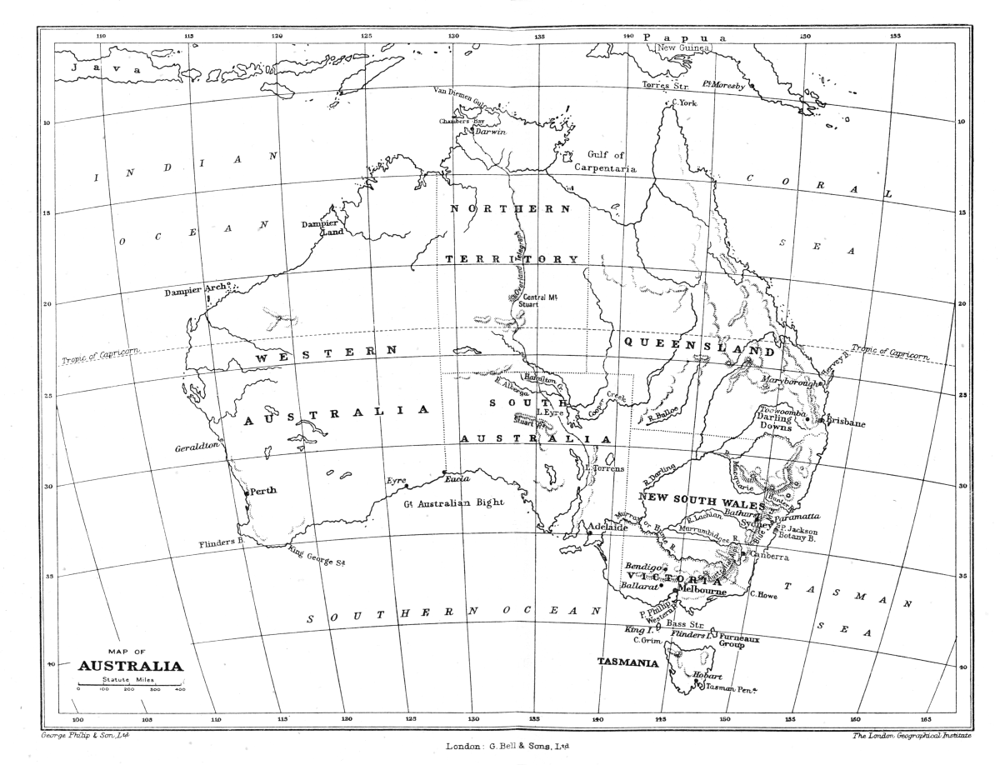

대양주 · 호주
호주 1901 — 여섯 식민지는 무엇을 함께 하기로 했을까
주와 중앙의 권한, 대표 원칙과 연방 기념의 바깥

경계를 넘을 때마다 규칙이 달라지는 여섯 식민지가 있었다. 교역과 방위, 이동의 문제를 함께 다루자는 구상은 마침내 호주 연방으로 이어졌다. 하지만 1901년은 영국과의 모든 관계가 끊어진 날도, 그 대륙의 역사가 처음 시작된 날도 아니다. 무엇을 중앙에 맡기고 무엇을 지역에 남겼는지, 새 국가의 기념 장면에 누가 포함되었는지를 함께 살펴보자.
01. 하나의 대륙에 서로 다른 정부가 있었다
연방 이전의 여러 식민지는 각자의 정치와 재정, 지역적 이해를 가지고 있었다. 가까운 이웃이라고 세금과 행정의 선택까지 같지는 않았다. 다른 지역과 거래하는 일에도 경계가 영향을 주었다. 하나의 호주라는 생각과 실제 하나의 정부를 만드는 일은 다른 단계였다.
지역마다 인구와 경제의 규모가 달랐다는 점도 중요했다. 큰 식민지는 인구에 걸맞은 영향력을 원했고 작은 식민지는 자기 의견이 묻힐 수 있다고 걱정했다. 결합은 편리함을 얻는 대신 권한을 어떻게 나눌지 협상하는 일이었다.
02. 함께 처리할 일이 늘어났다
교역과 통신, 방위처럼 여러 식민지를 가로지르는 문제는 협력의 이유가 되었다. 어느 한 지역이 혼자 결정해도 다른 지역에 영향을 주기 때문이다. 서로 경쟁하는 부분과 공동으로 다루면 유리한 부분이 함께 있었다.
그러나 연방이 필요하다는 주장만으로 곧바로 헌법이 나오지는 않았다. 누가 비용을 내고 어떤 권한을 잃을지에 대한 의심을 풀어야 했다. 사람들에게 새로운 중앙정부가 자기 생활에 어떤 차이를 만들지 설명하는 정치적 과정이 필요했다.
다른 지역의 상품을 어디까지 자유롭게 받아들일지는 지역의 생산자와 소비자에게 다른 의미를 가졌다. 통합된 시장이 유리하다는 큰 주장 아래에서도 각자가 계산하는 이익은 다를 수 있었다. 연방 논의가 경제 문제와 떨어질 수 없었던 이유다.
03. 1891년의 회의는 시작점이지 완성이 아니었다
헨리 파크스를 비롯한 정치가들은 식민지 사이의 협의를 추진했다. 1891년의 회의에서는 연방의 원칙과 대표 체제, 권한을 논의했다. 원문 회의 기록을 보면 이미 완성된 국가에 찬성하는 의식이 아니라 의견을 조정하는 과정이 드러난다.
이후의 논의와 선거, 주민투표 등을 거쳐 구체적인 틀이 다듬어졌다. 한 정치가의 연설이 곧바로 연방을 만들었다고 말하기는 어렵다. 지도자의 제안과 여러 지역에서 동의를 모으는 긴 작업을 함께 보아야 한다.
주민투표가 있었다는 사실만으로 오늘의 모든 성인이 같은 조건으로 의견을 냈다고 생각할 수는 없다. 당시 선거권의 범위는 지역과 시기에 따라 달랐다. 동의의 절차가 존재했다는 점과 그 절차에 포함된 사람의 범위를 함께 확인해야 한다.
04. 두 의회는 서로 다른 대표의 원칙을 담았다
연방의 의회에는 인구에 따른 대표와 주의 대표라는 다른 기준이 함께 들어갔다. 하원은 인구의 차이를 반영하고 상원은 주들이 동등하게 대표되는 틀을 가졌다. 큰 지역과 작은 지역의 이해를 하나의 기준만으로 조정하지 않은 것이다.
주 정부들도 사라지지 않았다. 중앙이 맡는 사무와 주에 남는 권한을 나누는 체계였다. 연방은 지역의 차이를 모두 지우는 통일과 달랐다. 무엇을 함께 결정하고 무엇은 각 지역에서 다룰지 정한 정치적 장치였다.
대표 원칙을 둘로 나누면 어떤 안건에서 인구의 다수가 원하는 방향과 주들의 판단이 어긋날 수도 있다. 그런 가능성을 감수하면서도 작은 지역이 공동의 국가를 신뢰할 장치를 두려 했다. 효율과 대표성 사이의 긴장은 연방의 결함만이 아니라 설계의 출발 조건이었다.
05. 1월의 출범과5월의 의회는 다른 장면이다
1901년 1월 1일 여섯 식민지는 연방을 이루는 주가 되었다. 같은 해 5월 멜버른에서 첫 연방의회가 문을 열었다. 국가의 출범과 의회의 개회식은 이어지지만 같은 날짜의 사건은 아니다. 기념 그림이나 기사도 어느 장면을 다루는지 구분해야 한다.
호주는 여전히 영국 제국과 연결되어 있었고 군주도 공유했다. 이후의 법적 자율성과 대외적 지위의 변화는 더 긴 과정을 거쳤다. 건국이라는 말을 현재와 똑같은 완전한 주권의 즉시 출현으로 바꾸면 이 단계들이 보이지 않는다.
06. 자유로운 사람들의 축제에서 누가 빠졌을까
첫 의회의 개회를 전한 신문은 자유와 희망을 강조했다. 그러나 이런 기념의 언어가 모든 주민의 동등한 권리를 뜻하지 않았다. 원주민과 토레스해협 섬 주민들은 새 국가의 결정을 함께 만드는 동등한 주체로 인정받지 못했다.
이민을 제한하고 인종적 경계를 세우는 정책도 연방 초기 국가 운영의 일부였다. 통합의 역사를 성공한 타협으로만 읽으면 그 안의 배제가 사라진다. 누구를 하나의 국민으로 부르고 누구의 이동과 권리를 제한했는지 함께 보아야 한다.
07. 연방의 지도를 현재의 지도와 비교하기
함께 실은 것은 당시 역사 자료집에 실린 호주 지도다. 오늘날 행정구역과 표기가 모두 같은 최신 지도가 아니다. 경계와 명칭을 보면 국가가 된 뒤에도 영토와 행정의 관계가 바뀌어 왔다는 점을 생각할 수 있다.
호주 연방은 차이를 남겨 둔 채 공동의 정부를 만드는 선택이었다. 동시에 그 공동체의 범위를 제한하는 선택이기도 했다. 여섯 지역이 합쳤다는 숫자에서 더 나아가 권한과 대표, 배제의 조건을 읽으면1901년은 기념일 이상의 구체적인 정치사가 된다.
이야기의 바탕이 된 자료
- Gwendolen H. Swinburne, A Source Book of Australian History — Convention1891 / Commonwealth1901 ↗확인일 2026-11-08
1891회의 발언·협력/대표 원칙·1901년5월 의회 개회와 Argus 기사·역사 지도. 축제의 자유로운 국민이라는 수사를 모든 주민의 동등한 정치적 권리로 받아들이지 않음